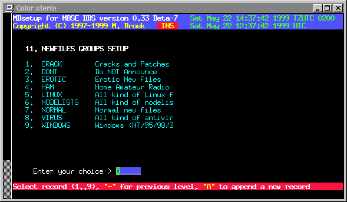

Last update 30-Jan-2001
MBSE BBS Setup - Newfiles Groups.
Introduction
The newfiles group are there to create separate newfiles announcements for several networks and areas. Even if you don't want to make different announcements you still need to define at least 2 groups. One is a group where you don't announce files in and one where you do. These groups are linked to the BBS file areas and must be defined before you define the BBS file areas. As you can see in the example picture I seperated the groups in subjects.
Newfiles Groups Setup.
Name The tag name of the group. Comment The comment for this group. Active If this group is active. Deleted If this group must be deleted.

 Back to index
Back to index